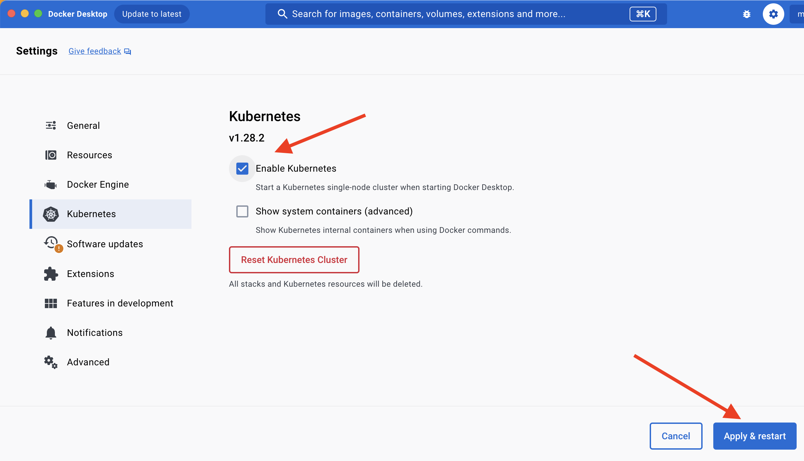

Get started
Magasin is a scalable end-to-end data platform based on open-source components that is natively run in a Kubernetes cluster.
Magasin offers a value-for-money end-to-end data solution implementing a loosely-coupled architecture for organizations that need to setup a framework to scale the ingestion, storage, analysis and visualization of datasets. In addition, It also includes the capability of parallel computing for analyzing large datasets or AI model training.
In this getting started you will install magasin on your local machine for testing purposes, then you will perform an end-to-end data processing task that involves: exploratory analysis of a data source, creating a pipeline to automate data ingestion and authoring a dashboard to present your findings.
Before you continue, you may want to learn more about why magasin and its technical architecture, otherwise, let’s start by knowing the pre-requisite for installing magasin.
1 Install pre-requisite: a Kubernetes cluster
Prior to installing magasin, you need to have a Kubernetes cluster. But don’t worry, you can setup one on your local machine very easily. In layman terms, Kubernetes is just a technology that enables managing cloud ready applications, such as magasin.
In this getting started tutorial, we are going to setup a Kubernetes cluster through Docker Desktop, an application that can be installed on most computers. However, if you already have a cluster you can go directly to the install magasin section.
First, install Docker Desktop. It is available for:
Once installed. Go to Settings / Kubernetes , and enable Kubernetes. It will automatically install everything required, including the command line utility kubectl.

In addition go to ** Settings / Resources ** and give it as much as CPU and Memory with a minimum of 14GB.

Lastly, on a command line, create the new cluster and use it:
kubectl config set-context magasin --namespace default --cluster docker-desktop --user=docker-desktop
kubectl config use-context magasinTo ensure that the kubernetes cluster is the correct one check if the name corresponds to the
kubectl get nodes
NAME STATUS ROLES AGE VERSION
docker-desktop Ready control-plane 48m v1.28.2kubectl get namespaces
NAME STATUS AGE
default Active 49m
kube-node-lease Active 49m
kube-public Active 49m
kube-system Active 49mAlternatively, you can also install minikube or if you have a cluster in any cloud provider you can also use it. At the end, you just need your kubectl to be setup to use whatever kubernetes cluster you want to use.
2 Install magasin
Magasin includes an installer script that sets up all the necessary dependencies on your computer, enabling the seamless setup within the Kubernetes cluster.
It is highly recommended to take a look at the installer script before running as it will install several components on your system.
You should run curl-bashing (curl piped with bash/zsh) only on providers that you trust. If you’re not confortable with this approach, proceed with the manual installation.
For GNU/Linux Debian like
curl -sSL https://unicef.github.io/magasin/install-magasin.sh | bashFor MacOS devices
curl -sSL https://unicef.github.io/magasin/install-magasin.sh | zshFor Windows check the documentation for manual installation
For other systems please check the documentation for manual installation
Note that the installation may take some minutes depending on the Internet connection speed of the machines running the cluster (mainly because of the container images).
3 Verify everything is working
After running the setup you can confirm that all the pods in the magasin-* namespace are in status Running or Complete
kubectl get pods --all-namespaces
NAMESPACE NAME READY STATUS RESTARTS AGE
kube-system coredns-5dd5756b68-fj7bj 1/1 Running 0 30d
kube-system coredns-5dd5756b68-qbjf4 1/1 Running 0 30d
kube-system etcd-docker-desktop 1/1 Running 0 30d
kube-system kube-apiserver-docker-desktop 1/1 Running 1 (16d ago) 30d
kube-system kube-controller-manager-docker-desktop 1/1 Running 0 30d
kube-system kube-proxy-n8wwq 1/1 Running 0 30d
kube-system kube-scheduler-docker-desktop 1/1 Running 5 30d
kube-system storage-provisioner 1/1 Running 5 (16d ago) 30d
kube-system vpnkit-controller 1/1 Running 0 30d
magasin-dagster dagster-daemon-5cbb759cbd-gzczz 1/1 Running 0 31m
magasin-dagster dagster-dagster-user-deployments-k8s-example-user-code-1-8qcjnt 1/1 Running 0 31m
magasin-dagster dagster-dagster-webserver-755f9bc489-w9jdw 1/1 Running 0 31m
magasin-dagster dagster-postgresql-0 1/1 Running 0 31m
magasin-daskhub api-daskhub-dask-gateway-6b7bf7ff6b-qqnjz 1/1 Running 0 31m
magasin-daskhub continuous-image-puller-jf6cd 1/1 Running 0 31m
magasin-daskhub controller-daskhub-dask-gateway-7f4d8b9475-bfzg6 1/1 Running 0 31m
magasin-daskhub hub-6848dd9966-zxh7k 1/1 Running 0 31m
magasin-daskhub proxy-797fc4d885-rrx4t 1/1 Running 0 31m
magasin-daskhub traefik-daskhub-dask-gateway-6555db458-vp6xs 1/1 Running 0 31m
magasin-daskhub user-scheduler-5d8967fc5f-bfjt9 1/1 Running 0 31m
magasin-daskhub user-scheduler-5d8967fc5f-tmn8r 1/1 Running 0 31m
magasin-drill drillbit-0 1/1 Running 0 33m
magasin-drill drillbit-1 1/1 Running 0 33m
magasin-drill zk-0 1/1 Running 0 33m
magasin-operator console-654bf548c-5xf45 1/1 Running 0 30m
magasin-operator minio-operator-7496fbc5d9-j82ml 1/1 Running 0 30m
magasin-operator minio-operator-7496fbc5d9-znppq 1/1 Running 0 30m
magasin-superset superset-7c88fcc74f-lrjwk 1/1 Running 0 31m
magasin-superset superset-init-db-75rht 0/1 Completed 0 31m
magasin-superset superset-postgresql-0 1/1 Running 0 31m
magasin-superset superset-redis-master-0 1/1 Running 0 31m
magasin-superset superset-worker-df94c5947-mw6k7 1/1 Running 0 31mIf you have any issue, check the troubleshooting section
The default installation is fine for testing purposes, but for a production environment you should follow the production deployment guides
4 Next steps
Ok, now you have a fully running instance of magasin in your Kubernetes cluster, so what now:
Start using magasin. We have created a tutorial that will take you through the typical steps for creating an end-to-end data processing pipeline and consequently for enabling a data-driven organization using magasin.
Also, you can learn more about the components and architecture of magasin. Learn more about the the different components that come out of the box with magasin.